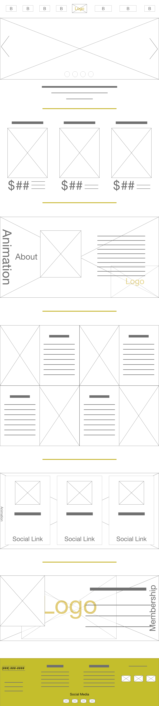
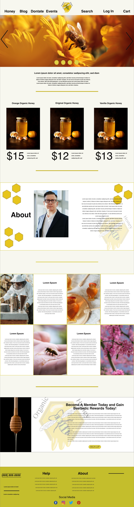

Organic Honey Website Design
This project was my first introduction to websites. Instead of jumping into codes, the course explored the part involved in making a website. For this project, we had to demonstrate our understanding of the website layout by creating the website design in Adobe XD. For this project, the focus was on a company called Organic Honey. I had to start with a hand-sketched wireframe and work my way up to a hi-wireframe.
Wireframe Elements
With the introduction of website wireframes, the project started with displaying basic elements that you can place upon your website. For this section of the project, I had to demonstrate these elements individually with the intention to put them together as one whole website.
In this element there is an article and an action button with the Organic Honey logo for a background. The idea behind this wireframe was to call the customer to action. Organic Honey wanted to get people to join their community and subscribe to their newsletters. The idea of this element was to bring customers to join the community itself.
This element displays 3 child-elements in a row. Within these elements there is a picture with descriptions underneath. The purpose of this element for the Organic Honey to sell thier organic honey products.
In this element, you see a picture on the left with a description and an action button on the right. The purpose of this element for Organic Honey was to display some of the newsletter articles to bring interest to their newsletter.
This element shows a prescription per month option. It displays the costs to subscribe to the newsletter.
This element shows a prescription per month option. For this element, it can be used for showing the prizes of prescription to the newsletter.
This element was to show a setup for a footer. You have a contact box above the footer and starter footer contents underneath.
Style Guide
The next step was to create a Style Guide for the website. Organic Honey did not have a logo, therefore, I designed their logo.
This is the first logo I created for Organic Honey. It is a bee on a honeycomb with honey coming out of it. After the class critiqued the logo, I was advised not to use the Papyrus font.
This was the revised logo for Organic Honey. The only difference was the changing of the font. The original logo was well received therefore, I kept it as it was and just changed out the font.
This is the styleguide I created for Organic Honey.
Basic Wireframe
I now had an understanding of basic wireframe elements. I took all the elements and applied them for an official basic wireframe for Organic Honey. I could have taken the elements I displayed above and pieced them together here like a puzzle. Instead, I built upon the elements and added more depth and engagement into the wireframe.
Hi-Def Wireframe
Now that I had the Basic Wirframe created it was time to design the Hi-Def wireframe.
